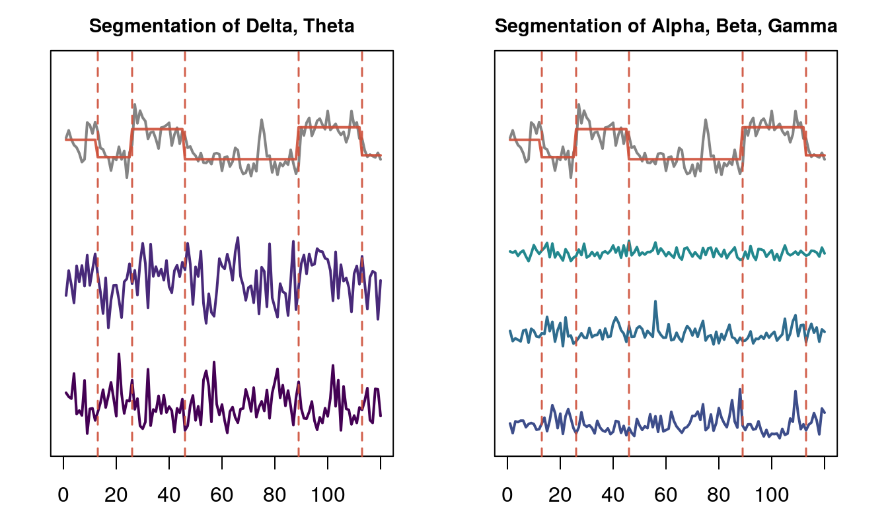
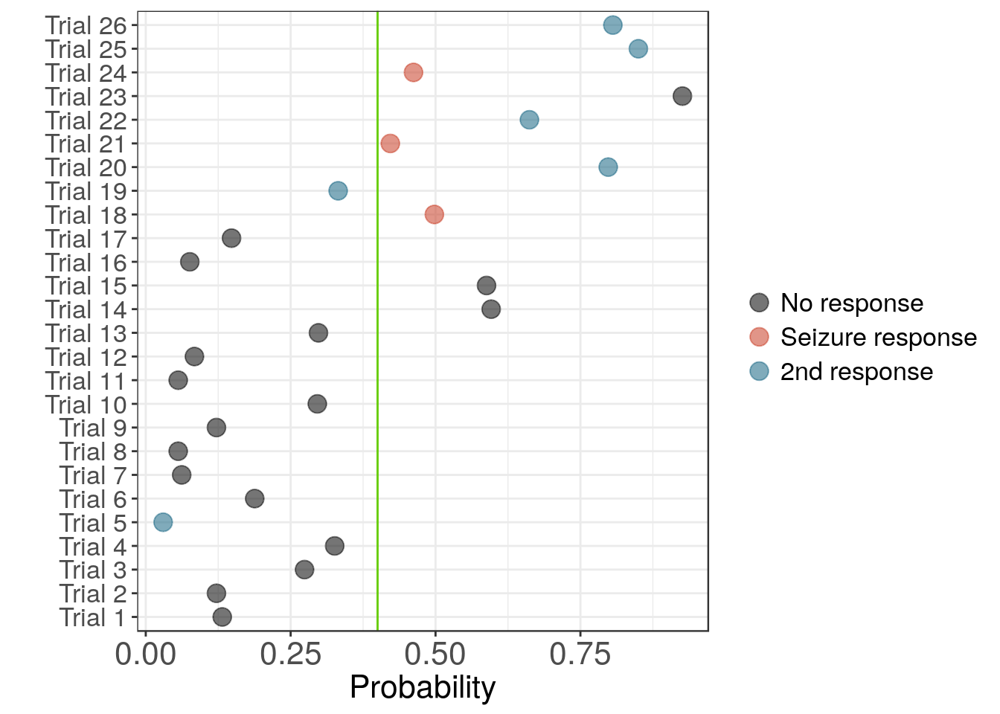

Seizure Prediction
Nathanael Aff
2017-07-10
Last updated: 2017-07-23
Code version: ff35075
devtools::load_all()
knitr::read_chunk("../code/eegplot.R") eeg <- readRDS(cache_file("eegsnip", prefix = "eeg"))
# dim(eeg)
fs <- 1220.703
plot_range <- function(a,b){
oldpar = par()
par(mfrow = c(6, 1), mar = c(1, 1, 1, 1))
for(k in 1:6){
plot(eeg[k, a:b],
type = 'l',
col = "gray20",
lwd = 1.5,
axes = FALSE,
frame.plot = FALSE)
}
}
secs = 8
a = 37000
b = a + fs*secs
plot_range(a,b)
8 second window of EEG inclduing the start appplication of a laser stimulus.
Classifier
knitr::read_chunk("../code/eeg-segment-plot.R") library(ggplot2)
library(dplyr)
library(viridis)
library(ecomplex)
prefix = "eeg"
seed = 2017
# Derived features. 30 Trials : 6 channels : 15 features
feature_df <-readRDS(cache_file("mod_all_features", prefix))
# Load meta data
trial_df <- readRDS(cache_file("mod_trial_segments", "eeg"))
df <- do.call(rbind, feature_df) %>%
cbind(., trial_df) %>%
dplyr::filter(., window == 240)
df$trial <- 1:26
ch = 1; colnums = c(5:9, 13:15); tnum = 8
dfch <- df[[ch]][[tnum]]
res <- palarm(dfch$ecomp.cspline_B)
seg_plot <- function(startn, stopn, title =""){
segcol = adjustcolor("tomato3", 0.9)
pal = c("gray20", segcol, viridis::viridis(256)[c(1, 30, 60, 90, 120)])
plot(dfch$ecomp.cspline_B + 3,
type = 'l',
col = adjustcolor("gray20", 0.6),
lwd = 2,
lty = 1,
ylim = c(0,2.2),
xlim = c(0,120),
xlab = "Time",
yaxt = "n",
ylab = "",
main = title)
lines(res$means + 3, type = 'l', xlim=c(0,120), col=segcol, lwd=2, lty= 1 )
for(k in startn:stopn) lines(dfch[ , 4 + k] + 0.5*(k-startn),
lwd = 2,
col = pal[k + 2])
for(k in res$kout) abline(v = k, col = segcol, lwd = 1.5, lty = 2)
}
# pdf(file.path(getwd(), paste0("figures/", prefix, "-segment-plot.pdf")),
# width = 9, height = 4)
par(mfrow = c(1,2), mar = c(2,1,2,1))
seg_plot(1,2, "Segmentation of Delta, Theta")
seg_plot(3,5, "Segmentation of Alpha, Beta, Gamma")

Segmentation of trial one based on the complexity coefficient \(B\). Only spectral features are shown.
# dev.off() knitr::read_chunk("../code/eeg-tables.R") library(dplyr)
prefix = "eeg"
vecmeans <- readRDS(cache_file("vecmeans", prefix))
ABmeans <- readRDS(cache_file("ABmeans", prefix))
ABacc <- ABmeans %>% lapply(., function(x) x["Balanced.Accuracy", ]) %>%
bind_rows(.) %>%
data.frame
vecacc <- vecmeans %>% lapply(., function(x) x["Balanced.Accuracy", ]) %>%
bind_rows(.) %>%
data.frame
combacc <- rbind(ABacc, vecacc)
names(combacc) <- paste0("ch", 1:6)
methods <- c("A", "B", "A+B", "8", "15", "30")
row.names(combacc) <- methods
combacc <- apply(combacc, 2, round, digits = 2)
names(combacc) <- paste0("Channel ", 1:6)
knitr::kable(combacc, caption = "Balanced accuracy of each models and channel combination.")| ch1 | ch2 | ch3 | ch4 | ch5 | ch6 | |
|---|---|---|---|---|---|---|
| A | 0.81 | 0.78 | 0.70 | 0.74 | 0.56 | 0.63 |
| B | 0.84 | 0.76 | 0.71 | 0.73 | 0.61 | 0.63 |
| A+B | 0.79 | 0.74 | 0.73 | 0.72 | 0.55 | 0.59 |
| 8 | 0.86 | 0.83 | 0.74 | 0.73 | 0.73 | 0.77 |
| 15 | 0.84 | 0.84 | 0.75 | 0.71 | 0.72 | 0.75 |
| 30 | 0.79 | 0.77 | 0.75 | 0.77 | 0.74 | 0.73 |
knitr::read_chunk("../code/eeg-classify-roc-import.R") library(ggplot2)
library(dplyr)
library(ecomplex)
library(randomForest)
library(tssegment)
library(caret)
prefix = "eeg"
seed = 2017
chs = 1:6
from_cache = TRUE
window = 240
len = window/2
# Derived features. 30 Trials : 6 channels : 15 features
feature_df <-readRDS(cache_file("mod_all_features", prefix))
# Load meta data
trial_df <- readRDS(cache_file("mod_trial_segments", "eeg"))
# tdf <- trial_df[trial_df$window == window, ]
# Select trials with 4 minute windows and
# combine feature data frames with metadata
df <- do.call(rbind, feature_df)
df <- df %>% cbind(trial_df)
df <- dplyr::filter(df, window == 240)
df$trial <- 1:26Trial
knitr::read_chunk("../code/eeg-trial-plot.R") library(dplyr)
from_cache = TRUE
plot_trial <- function(df_){
plot(
y,
xlim = c(0, max_end),
ylim = c(-0.5, 0.5),
lwd = 0.2,
lty = 3,
col = "gray40",
type = 'l',
xlab = '',
ylab = '',
yaxt = 'n',
xaxt = 'n'
)
for(k in (1:dim(df_)[1])){
rcol <- keycols[df_$col_key[k]]
if(df_$col_key[k]!=4){
count <<- count + 1
rect((
df_$stim_start[k]-240),
-0.5,
df_$stim_start[k],
0.5,
col = rcol,
border = "transparent")
text(df_$stim_start[k]-120, 0, paste0(count),
cex = 1.3,
col = "gray90"
)
}
abline(v = (df_$stim_start[k]+1), col = "chartreuse3", lwd = 3)
}
}
count = 0
metadf <- readRDS(cache_file("windows2", "meta"))
# Fix errror:
metadf$col_key[13] <- 4
trial_keys <- unique(metadf$key)
max_end <- max(metadf$stim_end)
x <- (0:max_end)
y <- rep(0, length(x))
keycols <- eegpalette()
# pdf(file.path(getwd(), paste0("figures/", prefix, "-param-plots-notrandom.pdf")),
# width = 9, height = 4)
par(mfrow = c(8,2), mar = c(1, 0.5, 1, 0.5), cex.axis = 1.4, cex.lab = 1.4)
for(k in 1:length(trial_keys)){
df_ <- metadf %>% dplyr::filter(key == trial_keys[k])
plot_trial(df_)
}
plot(1, type = 'n', axes = "FALSE")
legend(x = "center", inset = 0,
c("No response", "1st response ", "2nd response"),
col = keycols, pch = 15, cex = 1.3, horiz = TRUE)
plot(1, type = 'n', axes = "FALSE")
Schematic of the trial time periods. A seizures is indicated as a ‘repsonse’ and initial seizures and secondary seizures are indicated by color.
# dev.off() knitr::read_chunk("../code/eeg-cv-ch1-plot.R") library(ggplot2)
prefix = "eeg"
palette(eegpalette())
meta_df <- readRDS(cache_file("windows2", "meta"))
predict <- readRDS(cache_file("cv_results_ch_1", "eeg") )
predict_df <- predict$df
colkey <- predict_df$trial_type <- meta_df %>%
dplyr::filter(window == 240) %>%
dplyr::select(col_key)
colkey <- colkey[[1]]
# colkey[colkey == 3] <- 2
thresholds <- readRDS(cache_file("cvthresholds", prefix))
tnames <- paste0("Trial ", 1:26)
tnames <- factor(tnames, levels = tnames)
names(predict_df) <- c("response","probability", "trialnum", "ground")
# Edited : Seizure vs No seizure
ggplot(predict_df, aes( x = tnames, y = probability)) +
geom_point(stat='identity', aes(col=as.factor(colkey)), size= 4) +
scale_color_manual(name="",
labels = c("No response", "Seizure response", "2nd response"),
values = eegpalette()) +
labs(y = "Probability", x = "") +
coord_flip() +
geom_hline(yintercept=thresholds[[1]], colour = "chartreuse3") +
theme_bw() +
theme(text = element_text(size= 16),
axis.text.x = element_text(size = 16),
panel.background = element_rect(fill = "transparent", colour = NA),
# panel.background = element_blank(),
plot.background = element_blank(),
legend.background = element_rect(fill = "transparent", colour = NA))

Probability of seizure for model built on channel 1 using complexity coefficients.
palette("default")Session information
sessionInfo()R version 3.4.1 (2017-06-30)
Platform: x86_64-pc-linux-gnu (64-bit)
Running under: Ubuntu 14.04.5 LTS
Matrix products: default
BLAS: /usr/lib/libblas/libblas.so.3.0
LAPACK: /usr/lib/lapack/liblapack.so.3.0
locale:
[1] LC_CTYPE=en_US.UTF-8 LC_NUMERIC=C
[3] LC_TIME=en_US.UTF-8 LC_COLLATE=en_US.UTF-8
[5] LC_MONETARY=en_US.UTF-8 LC_MESSAGES=en_US.UTF-8
[7] LC_PAPER=en_US.UTF-8 LC_NAME=C
[9] LC_ADDRESS=C LC_TELEPHONE=C
[11] LC_MEASUREMENT=en_US.UTF-8 LC_IDENTIFICATION=C
attached base packages:
[1] stats graphics grDevices utils datasets methods base
other attached packages:
[1] caret_6.0-76 lattice_0.20-35 tssegment_0.0.0.9000
[4] randomForest_4.6-12 bindrcpp_0.2 ecomplex_0.0.1
[7] viridis_0.3.4 dplyr_0.7.1 ggplot2_2.2.1
[10] eegcomplex_0.0.0.1
loaded via a namespace (and not attached):
[1] splines_3.4.1 foreach_1.4.3 assertthat_0.2.0
[4] stats4_3.4.1 highr_0.6 yaml_2.1.14
[7] backports_1.0.5 quantreg_5.26 glue_1.1.1
[10] quadprog_1.5-5 pROC_1.9.1 digest_0.6.12
[13] sapa_2.0-2 minqa_1.2.4 colorspace_1.2-6
[16] htmltools_0.3.6 Matrix_1.2-10 plyr_1.8.4
[19] timeDate_3012.100 pkgconfig_2.0.1 devtools_1.13.2
[22] SparseM_1.7 scales_0.4.1 ForeCA_0.2.4
[25] MatrixModels_0.4-1 ifultools_2.0-4 lme4_1.1-13
[28] pracma_2.0.7 git2r_0.18.0 tibble_1.3.3
[31] mgcv_1.8-12 car_2.1-4 withr_1.0.2
[34] nnet_7.3-12 lazyeval_0.2.0 pbkrtest_0.4-6
[37] magrittr_1.5 memoise_1.1.0 evaluate_0.10.1
[40] nlme_3.1-128 MASS_7.3-45 xml2_1.1.1
[43] ggthemes_3.4.0 tools_3.4.1 stringr_1.2.0
[46] munsell_0.4.3 compiler_3.4.1 timeSeries_3022.101.2
[49] fArma_3010.79 rlang_0.1.1 grid_3.4.1
[52] nloptr_1.0.4 iterators_1.0.8 labeling_0.3
[55] fractaldim_0.8-4 rmarkdown_1.6 gtable_0.2.0
[58] ModelMetrics_1.1.0 codetools_0.2-15 fracdiff_1.4-2
[61] gmwm_2.0.0 abind_1.4-3 roxygen2_6.0.1
[64] reshape2_1.4.1 R6_2.2.2 gridExtra_2.2.1
[67] knitr_1.16 bindr_0.1 commonmark_1.2
[70] fBasics_3011.87 rprojroot_1.2 stringi_1.1.5
[73] pdc_1.0.3 parallel_3.4.1 Rcpp_0.12.11
[76] splus2R_1.2-1